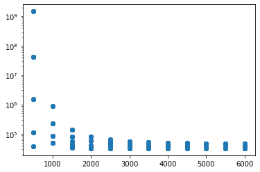
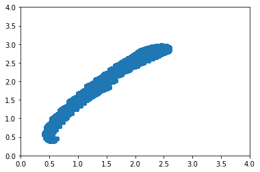
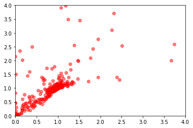
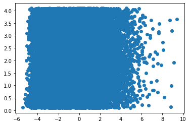

[2]:
from astropy.table import Table
import pylab as plt
from xidplus.numpyro_fit.misc import load_emulator
import seaborn as sns
import numpy as np
import jax.numpy as jnp
%matplotlib inline
/Users/pdh21/anaconda3/envs/xidplus/lib/python3.6/site-packages/dask/config.py:168: YAMLLoadWarning: calling yaml.load() without Loader=... is deprecated, as the default Loader is unsafe. Please read https://msg.pyyaml.org/load for full details.
data = yaml.load(f.read()) or {}
WARNING: AstropyDeprecationWarning: block_reduce was moved to the astropy.nddata.blocks module. Please update your import statement. [astropy.nddata.utils]
[3]:
data=Table.read('./kasia_gen_SEDS_zall.fits')
[12]:
data
[12]:
Table length=44457984
| id | spire_250 | spire_350 | spire_500 | dust.luminosity | sfh.sfr | stellar.m_star | agn.fracAGN | attenuation.Av_BC | dust.alpha | sfh.age_main | sfh.tau_main | universe.redshift | log10_sfh.sfr |
|---|---|---|---|---|---|---|---|---|---|---|---|---|---|
| mJy | mJy | mJy | W | solMass / yr | solMass | mag | Myr | Myr | solMass / yr | ||||
| int64 | float64 | float64 | float64 | float64 | float64 | float64 | float64 | float64 | float64 | float64 | float64 | float64 | float64 |
| 0 | 4.411296753774093 | 1.7070287328618072 | 0.6059010576347069 | 25031118.564180978 | 0.01 | 8688687.765422262 | 0.0 | 0.1 | 0.0625 | 1000.0 | 500.0 | 0.0031622776602 | -2.0 |
| 1 | 4.414154490037779 | 1.7080047409492833 | 0.6062552784851811 | 25031118.564180978 | 0.01 | 8688687.765422262 | 0.1 | 0.1 | 0.0625 | 1000.0 | 500.0 | 0.0031622776602 | -2.0 |
| 2 | 4.417726660367385 | 1.709224751058628 | 0.6066980545482739 | 25031118.564180978 | 0.01 | 8688687.765422262 | 0.2 | 0.1 | 0.0625 | 1000.0 | 500.0 | 0.0031622776602 | -2.0 |
| 3 | 4.422319450791165 | 1.710793335484929 | 0.6072673380579644 | 25031118.564180978 | 0.01 | 8688687.765422262 | 0.3 | 0.1 | 0.0625 | 1000.0 | 500.0 | 0.0031622776602 | -2.0 |
| 4 | 4.525250208003563 | 1.7491750936247186 | 0.6195228189229224 | 25031118.564180978 | 0.01 | 8688687.765422262 | 0.0 | 0.1 | 0.1875 | 1000.0 | 500.0 | 0.0031622776602 | -2.0 |
| 5 | 4.528107944267248 | 1.7501511017121951 | 0.6198770397733966 | 25031118.564180978 | 0.01 | 8688687.765422262 | 0.1 | 0.1 | 0.1875 | 1000.0 | 500.0 | 0.0031622776602 | -2.0 |
| 6 | 4.531680114596854 | 1.7513711118215398 | 0.6203198158364893 | 25031118.564180978 | 0.01 | 8688687.765422262 | 0.2 | 0.1 | 0.1875 | 1000.0 | 500.0 | 0.0031622776602 | -2.0 |
| 7 | 4.536272905020635 | 1.7529396962478412 | 0.6208890993461801 | 25031118.564180978 | 0.01 | 8688687.765422262 | 0.3 | 0.1 | 0.1875 | 1000.0 | 500.0 | 0.0031622776602 | -2.0 |
| 8 | 4.6649869297883875 | 1.801065084350765 | 0.6364464462227206 | 25031118.564180978 | 0.01 | 8688687.765422262 | 0.0 | 0.1 | 0.3125 | 1000.0 | 500.0 | 0.0031622776602 | -2.0 |
| ... | ... | ... | ... | ... | ... | ... | ... | ... | ... | ... | ... | ... | ... |
| 61430 | 17943993.268422667 | 8672083.461371437 | 3093044.767655919 | 336223476043342.6 | 31622.776601683792 | 181137367562170.28 | 0.2 | 3.6 | 3.6875 | 9000.0 | 6000.0 | 0.0251188643151 | 4.5 |
| 61431 | 17945029.724159658 | 8672435.82359508 | 3093171.755873231 | 336223476043342.6 | 31622.776601683792 | 181137367562170.28 | 0.3 | 3.6 | 3.6875 | 9000.0 | 6000.0 | 0.0251188643151 | 4.5 |
| 61432 | 18131427.830722403 | 8786621.887239601 | 3138184.618522174 | 336223476043342.6 | 31622.776601683792 | 181137367562170.28 | 0.0 | 3.6 | 3.8125 | 9000.0 | 6000.0 | 0.0251188643151 | 4.5 |
| 61433 | 18132072.736514308 | 8786841.134845423 | 3138263.633412946 | 336223476043342.6 | 31622.776601683792 | 181137367562170.28 | 0.1 | 3.6 | 3.8125 | 9000.0 | 6000.0 | 0.0251188643151 | 4.5 |
| 61434 | 18132878.868754193 | 8787115.194352701 | 3138362.4020264107 | 336223476043342.6 | 31622.776601683792 | 181137367562170.28 | 0.2 | 3.6 | 3.8125 | 9000.0 | 6000.0 | 0.0251188643151 | 4.5 |
| 61435 | 18133915.324491184 | 8787467.556576345 | 3138489.390243723 | 336223476043342.6 | 31622.776601683792 | 181137367562170.28 | 0.3 | 3.6 | 3.8125 | 9000.0 | 6000.0 | 0.0251188643151 | 4.5 |
| 61436 | 18296756.59170101 | 8890284.23330905 | 3178109.88975285 | 336223476043342.6 | 31622.776601683792 | 181137367562170.28 | 0.0 | 3.6 | 3.9375 | 9000.0 | 6000.0 | 0.0251188643151 | 4.5 |
| 61437 | 18297401.49749291 | 8890503.48091487 | 3178188.9046436213 | 336223476043342.6 | 31622.776601683792 | 181137367562170.28 | 0.1 | 3.6 | 3.9375 | 9000.0 | 6000.0 | 0.0251188643151 | 4.5 |
| 61438 | 18298207.629732795 | 8890777.540422147 | 3178287.6732570874 | 336223476043342.6 | 31622.776601683792 | 181137367562170.28 | 0.2 | 3.6 | 3.9375 | 9000.0 | 6000.0 | 0.0251188643151 | 4.5 |
| 61439 | 18299244.085469786 | 8891129.902645791 | 3178414.6614743993 | 336223476043342.6 | 31622.776601683792 | 181137367562170.28 | 0.3 | 3.6 | 3.9375 | 9000.0 | 6000.0 | 0.0251188643151 | 4.5 |
[17]:
ind=(data['sfh.sfr']==100) & (data['universe.redshift']==0.0251188643151) & (data['dust.alpha']==3.6875) & (data['attenuation.Av_BC']==1.1)
[22]:
plt.plot(data[ind]['sfh.tau_main'],data[ind]['spire_250'],'o')
plt.yscale('log')

[4]:
plt.plot(data['spire_250']/data['spire_350'],data['spire_350']/data['spire_500'],'o')
plt.xlim(0,4)
plt.ylim(0,4)
[4]:
(0.0, 4.0)

[ ]:
[7]:
emulator=load_emulator('./CIGALE_emulator_20210420_log10sfr_uniformAGN_z.npz')
[ ]:
[8]:
params=np.vstack((np.random.normal(1,3,1000),np.random.beta(1,3,1000),np.random.uniform(0,6,1000))).T
[9]:
src_f = np.exp(np.array(jnp.exp(emulator['net_apply'](emulator['params'], params))))
W0118 13:33:03.271687 4569578944 xla_bridge.py:135] No GPU/TPU found, falling back to CPU. (Set TF_CPP_MIN_LOG_LEVEL=0 and rerun for more info.)
[10]:
#plt.plot(data['spire_250']/data['spire_350'],data['spire_350']/data['spire_500'],'o',alpha=0.5)
plt.plot(src_f[:,0]/src_f[:,1],src_f[:,1]/src_f[:,2],'ro',alpha=0.5)
plt.xlim(0,4)
plt.ylim(0,4)
[10]:
(0.0, 4.0)

[51]:
data[0:5]
[51]:
Table length=5
| id | spire_250 | spire_350 | spire_500 | dust.luminosity | sfh.sfr | stellar.m_star | agn.fracAGN | attenuation.Av_BC | dust.alpha | sfh.tau_main | universe.redshift |
|---|---|---|---|---|---|---|---|---|---|---|---|
| mJy | mJy | mJy | W | solMass / yr | solMass | mag | Myr | ||||
| int64 | float64 | float64 | float64 | float64 | float64 | float64 | float64 | float64 | float64 | float64 | float64 |
| 0 | 0.041621887445926216 | 0.0002080181415828583 | 2.926302473957815 | 163086241946.35803 | 2285.3842238885068 | 5170197363.6743555 | 0.2287869561655 | 2.8773710997301 | 0.875 | 4136.0 | 3.2312133884323 |
| 0 | 0.019655286851182056 | 0.0002964214284852536 | 0.00014968833934695205 | 1301117562.9224253 | 0.02952183098477212 | 10254106544048.4 | 0.0659241997702 | 1.6244705608249 | 0.1875 | 4370.0 | 4.5875034068096 |
| 0 | 1.1506986992346848 | 225.90909807934815 | 6.915402736253743e-05 | 44953686280197.1 | 7516.589672174983 | 17390745137.038807 | 0.836677627888 | 1.3014726358861 | 1.125 | 5642.0 | 5.9429822537025 |
| 0 | 2907.64342324597 | 32.994055897694075 | 14.988485108568183 | 335179046751.79706 | 8.089860829410162 | 498222333.5690045 | 0.1043819947759 | 1.9722444509443 | 2.5625 | 3264.0 | 0.6359529324044 |
| 0 | 68.19325323190652 | 0.009632378759604269 | 0.0024900351480657973 | 699820530.3835655 | 130.0101872005839 | 831849678.8735007 | 0.0613394728339 | 3.1364487246045 | 2.25 | 5381.0 | 3.5932659978029 |
[59]:
plt.plot(np.log10(data['spire_250']),data['attenuation.Av_BC'],'o')
[59]:
[<matplotlib.lines.Line2D at 0x7f856273f8d0>]

[46]:
data['universe.redshift']
[46]:
<Column name='universe.redshift' dtype='float64' length=28337>
| 3.2312133884323 |
| 4.5875034068096 |
| 5.9429822537025 |
| 0.6359529324044 |
| 3.5932659978029 |
| 1.8713190278726 |
| 4.1702110360301 |
| 0.4216650338058 |
| 3.7643498643524 |
| 3.1600160576012 |
| 3.4125055680069 |
| 2.2513125193855 |
| ... |
| 1.1730489680186 |
| 3.7536826640913 |
| 2.1124610071923 |
| 4.3133210135527 |
| 1.4813117362325 |
| 4.9181695151816 |
| 1.9225882311663 |
| 2.0364684158154 |
| 2.2188886438772 |
| 5.7178895774012 |
| 2.2632639703966 |
| 4.0078688142308 |
[ ]: